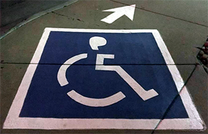

Introduction to Accessibility

At ASU, we embrace the values of inclusion and fairness. For faculty, staff, and administrators, this means a commitment to providing accessible digitial content and services to all students, regardless of their abilities or the technology they use.
Everyone at ASU shares responsibility for web accessibility. Whatever your role at ASU, you can contribute directly to the university's accessibility efforts. Read on to learn more about accessibility and how you can make a difference.
Course Objectives
After completing this course, you will be able to:
- Understand the difference between accessibility and accommodation
- Understand technical challenges faced by people with disabilities
- Understand the POUR principles, and how they relate to IT accessibility
- Identify examples of assistive technology for users with disabilities
- Understand the legal implications of accessibility
- Understand how accessibility benefits everyone
- Understand what you can do to support accessible IT
- Understand where you can obtain information on accessibility issues on your campus